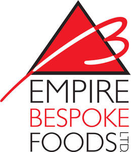

Trade Mark Journal No.2025/046 14 November 2025
UK00004280837 20 October 2025 (35,39)

- Class 35
- Commercial consultancy; Advertising of commercial or residential real estate; Exhibitions for commercial or advertising purposes; Commercial information; Commercial management; Organization of fairs for commercial and advertising purposes; Distribution of advertisements and commercial announcements; Help in the management of business affairs or commercial functions of an industrial or commercial enterprise; Organization of exhibitions for commercial or advertising purposes; Organisation of exhibitions for commercial and advertising purposes; Organisation of exhibitions for commercial or advertising purposes; Trade fair (Organization of -) for commercial or advertising purposes; Web indexing for commercial or advertising purposes; Commercial intermediation for business purposes; Consumer profiling for commercial or marketing purposes; Providing user ratings for commercial or advertising purposes; Commercial consultancy services; Customer club services, for commercial, promotional and/or advertising purposes; Organisation of trade fairs for commercial or advertising purposes; Assistance to industrial or commercial enterprises in the running of their business; Organisation of events for commercial and advertising purposes; Providing user reviews for commercial or advertising purposes; Organization of trade fairs for commercial or advertising purposes; Trade fairs (Organization of -) for commercial or advertising purposes; Organisation of fashion shows for commercial purposes; Commercial business management; Commercial or industrial management assistance; Commercial and industrial management assistance; Industrial management assistance (Commercial or -); Management assistance (Commercial or industrial -); Organizing exhibitions for commercial or advertising purposes; Providing user rankings for commercial or advertising purposes; Organisation and holding of fairs for commercial or advertising purposes; Organising exhibitions for commercial or advertising purposes; Commercial information agencies; Information agencies (Commercial -); Exhibitions (Conducting -) for commercial purposes; Commercial information (Compilation of -); Organization of fairs and exhibitions for commercial and advertising purposes; Organization of art exhibitions for commercial or advertising purposes; Operation of commercial businesses [for others]; Business management assistance for industrial or commercial companies; Commercial information services; Trade show and commercial exhibition services; Business and commercial information services; Compilation of statistics [for business or commercial purposes]; Compilation of statistics for business or commercial purposes; Commercial intermediation services; Customer loyalty services for commercial, promotional and/or advertising purposes; Compilation of commercial registers; Organisation of customer loyalty programs for commercial, promotional or advertising purposes; Conducting of commercial events; Assistance to management in commercial enterprises in respect of advertising; Arranging of exhibitions for commercial purposes; Exhibitions (Arranging -) for commercial purposes; Organisation of exhibitions and trade fairs for commercial and advertising purposes; Organisation of exhibitions and trade fairs for commercial or advertising purposes; Organisation of trade fairs and exhibitions for commercial or advertising purposes; Organisation of exhibitions or trade fairs for commercial or advertising purposes; Organization of exhibitions and trade fairs for commercial or advertising purposes; Acquisition of commercial information; Collection of commercial information; Production of advertising matter and commercials; Arranging of presentations for commercial purposes; Organisation of exhibitions and events for commercial or advertising purposes; Production of commercials; Arranging of demonstrations for commercial purposes; Provision of business and commercial information; Provision of commercial information [business]; Assistance in franchised commercial business management; Arranging of displays for commercial purposes; Import and export services; Wholesale services in relation to foodstuffs; Purchase orders (Administrative processing of -).
- Class 39
- Shipping of goods; Freight [shipping of goods]; Distribution [transport] of retail goods; Arranging the shipping of goods; Goods warehousing; Warehousing of goods; Shipping of documents.
Empire Bespoke Foods Ltd